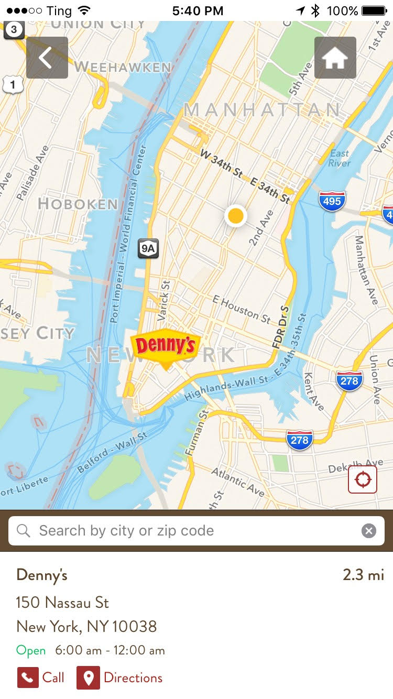
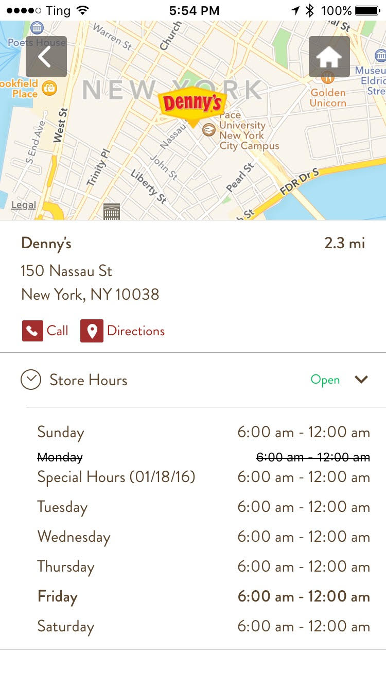
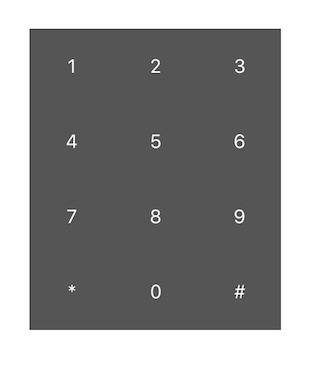
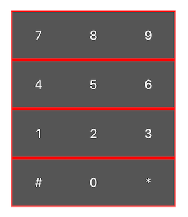
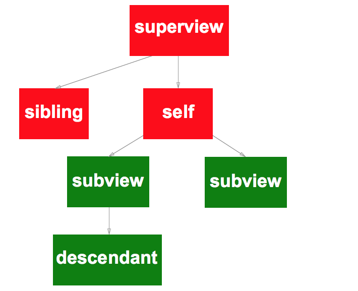

Auto Layout
And How to Royally Mess It Up
Tom Elliott
#1 in Digital Location Management
Forbes Most Promising Companies (2014 & 2015)
Fortune's Best Places to Work (2014 & 2015).
Screens
Mobile SDK for Yext-powered store locators


Requirements
- Support iOS 7 and 8
- No third-party libraries
- Embed into any UI
- Distribute as framework (No storyboards or xib)
Consequence
- Only use programmatic autolayout
What is Auto Layout?
Solution of simultaneous equations
Constraints
- Specify a relationship between the layout properties of two views
- Properties: position or size
- Comparison and may include a constant
- Vertical solution does not affect horizontal solution
Programmatic Auto Layout
Creating a Constraint
[view addConstraint:[NSLayoutConstraint
constraintWithItem:child1
attribute:NSLayoutAttributeCenterY
relatedBy:NSLayoutRelationEqual
toItem:child2
attribute:NSLayoutAttributeCenterY
multiplier:1.0
constant:0.0]
];
Programmatic Autolayout
Creating multiple constraints - Visual Format Language
[view addConstraints:
[NSLayoutConstraint
constraintsWithVisualFormat:@"V:|-[child1]-(20)-[child2]-|"
options:kNilOptions
metrics:@{}
views:views
]
];
What Could Go Wrong?
- Unsatisfiable Constraints
- Ambiguous Layout
- Crashes
Unsatisfiable Constraints
Unable to simultaneously satisfy constraints.
Probably at least one of the constraints in the following list is one you don't want.
Try this:
(1) look at each constraint and try to figure out which you don't expect;
(2) find the code that added the unwanted constraint or constraints and fix it.
(Note: If you're seeing NSAutoresizingMaskLayoutConstraints that you don't understand, refer to the documentation for the UIView property translatesAutoresizingMaskIntoConstraints)
(
"<NSAutoresizingMaskLayoutConstraint:0x7fe709418da0 h=--& v=--& H:[UIImageView:0x7fe709434820(320)]>",
"<NSLayoutConstraint:0x7fe70943b4b0 H:|-(0)-[UIImageView:0x7fe709434820] (Names: '|':UIView:0x7fe709434f40 )>",
"<NSLayoutConstraint:0x7fe70943b500 H:[UIImageView:0x7fe709434820]-(0)-| (Names: '|':UIView:0x7fe709434f40 )>",
"<NSLayoutConstraint:0x7fe709438470 'UIView-Encapsulated-Layout-Width' H:[UIView:0x7fe709434f40(414)]>"
)
Unsatisfiable Constraints
Simplified

Unsatisfiable Constraints
How to Break It
Forget to set up your views for autolayout
- Autoresizing: predecessor to Auto Layout
- By default, all programmatically created views are configured for autoresizing compatibility
- Adds constraints that will mess yours up
Unsatisfiable Constraints
How Not to Break It
Turn off autoresizing support
subview.translatesAutoresizingMaskIntoConstraints = NO;
Unsatisfiable Constraints
How to Break It
Limit your view to a fixed size
@"H:|[green(==100)][blue(==100)]|"
Unsatisfiable Constraints
How to Break It
Limit your view to a minimum/maxiumum size
@"H:|[green(==100)][blue(<=100)]|"
Unsatisfiable Constraints
How Not to Break It
Use priorities
@"H:|[green(==100@999)]-(100@700)-[blue(==100@800)]|"
Ambiguous Layout
- Multiple solutions to constraints
- May not always be apparent in testing
- Test with:
hasAmbiguousLayout - Exercise with:
exerciseAmbiguityInLayout
Ambiguous Layout
How to Break It
Inequalities
@"H:|[green(>=5)][blue(>=5)]"
@"H:|[green(<=100)][blue(<=100)]"
[green hasAmbiguousLayout] == YES && [blue hasAmbiguousLayout] == YES
Ambiguous Layout
How Not to Break It
Add a Deciding Constraint
@"H:|[leftView(==rightView)]"
@"H:|[leftView(<=100)][spacer(==leftView@999)][rightView(<=100)]|"
Spacer is a UIView used to support up to 300px
Crashes
- Bad Visual Format Language strings
- Constraining to superview before adding
Crashes
How to Break It
Bad VFL - Typos
Crashes
How to Break It
Typos
[self addConstraints:
[NSLayoutConstraint
constraintsWithVisualFormat:
@"H:|[one][two(==one)][three(==one)]|"
options:0 metrics:nil views:views]];
[self addConstraints:
[NSLayoutConstraint
constraintsWithVisualFormat:
@"H:|[four(==one)][five(==one)][six(==one)]|"
options:0 metrics:nil views:views]];
[self addConstraints:
[NSLayoutConstraint
constraintsWithVisualFormat:
@"H:|[seven(==one)][eigdt(==one)][nine(==one)]|"
options:0 metrics:nil views:views]];
[self addConstraints:
[NSLayoutConstraint
constraintsWithVisualFormat:
@"H:|[star(==one)][zero(==one)][hash(==one)]|"
options:0 metrics:nil views:views]];
Crashes
How to Break It
Typos (part 2)
[self addConstraints:
[NSLayoutConstraint
constraintsWithVisualFormat:
@"V:|[one][four(==one)][seven(==one)][star(==one)]|"
options:0 metrics:nil views:views]];
[self addConstraints:
[NSLayoutConstraint
constraintsWithVisualFormat:
@"V:|[two(==one)][five(==one)][eight(==one)][zero(==one)]|"
options:0 metrics:nil views:views]];
[self addConstraints:
[NSLayoutConstraint
constraintsWithVisualFormat:
@"V:|[three(==one)][six(==one)][nine(==one)][hash(==one)]|"
options:0 metrics:nil views:views]];
Seven blocks of VFL
Crashes
How Not to Break It
Simpler Views
Crashes
How Not to Break It
@implementation PhoneRowView
- (id) initWithLeft:(UIButton*)left middle:(UIButton*)middle right:(UIButton*)right {
if(self = [super init]){
[self addSubview:left]; [self addSubview:middle]; [self addSubview:right];
NSDictionary *views = NSDictionaryOfVariableBindings(left,middle,right);
// OMITTED: Make our left, right and middle views full-height (V:|[view]|)
[self addConstraints: [NSLayoutConstraint
constraintsWithVisualFormat:@"H:|[left][middle(==left)][right(==left)]|"
options:0 metrics:nil views:views]];
}
return self;
}
@end
Crashes
How Not to Break It
PhoneRowView *row1 = [[PhoneRowView alloc] initWithLeft:digits[7]
middle:digits[8]
right:digits[9]];
PhoneRowView *row2 = [[PhoneRowView alloc] initWithLeft:digits[4]
middle:digits[5]
right:digits[6]];
PhoneRowView *row3 = [[PhoneRowView alloc] initWithLeft:digits[1]
middle:digits[2]
right:digits[3]];
PhoneRowView *row4 = [[[PhoneRowView alloc] initWithLeft:hash
middle:digits[0]
right:star];
// OMITTED: Prepare rows for Auto Layout, add to view
// and make full width (H:|[view]|)
NSDictionary *views = NSDictionaryOfVariableBindings(row1,row2,row3,row4);
[self addConstraints:[NSLayoutConstraint
constraintsWithVisualFormat:
@"V:|[row1][row2(==row1)][row3(==row1)][row4(==row1)]|"
options:0 metrics:nil views:views]];
Four blocks of VFL at most
Crashes
How to Break It
Constraining to a superview too early
- (id) init {
// ...
[self
addConstraints:[NSLayoutConstraint
constraintsWithVisualFormat:@"H:|[self]|"
options:0
metrics:nil
views:@{@"self" : self}]];
Crashes
How Not to Break It
Only constrain subviews
Additional Best Practices
Avoid Adding/Removing Constraints
- Add constraints up-front in the init method
- Modify constraints in
updateConstraintsmethod - Change properties rather than replacing constraints
Example: Resizing the height of a view
Two constraints: heightConstraintCollapsed and heightConstraintExpanded
Avoid Adding/Removing Constraints
Not ideal
- (void) updateConstraints {
if(self.isExpanded){
[self removeConstraint:self.heightConstraintCollapsed];
[self addConstraint:self.heightConstraintExpanded];
} else {
[self removeConstraint:self.heightConstraintExpanded];
[self addConstraint:self.heightConstraintCollapsed];
}
[super updateConstraints];
}
Avoid Adding/Removing Constraints
Very Bad
- (void) updateConstraints {
[self removeConstraints:self.constraints];
[self addConstraints:[NSLayoutConstraint
constraintsWithVisualFormat:@"H:|[content]|"
options:0
metrics:nil
views:@{@"content" : self.content}]];
[self addConstraint:[NSLayoutConstraint
constraintWithItem:self.content
attribute:NSLayoutAttributeHeight
relatedBy:NSLayoutRelationEqual
toItem:nil
attribute:NSLayoutAttributeNotAnAttribute
multiplier:1.0
constant:self.expanded ? 300 : 20]]
[super updateConstraints];
}
Avoid Adding/Removing Constraints
A Better Approach
Modify constraint priorities
- (void) updateConstraints {
if(self.isExpanded){
self.heightConstraintCollapsed.priority = 1;
self.heightConstraintExpanded.priority = 999;
} else {
self.heightConstraintCollapsed.priority = 999;
self.heightConstraintExpanded.priority = 1;
}
[super updateConstraints];
}
Avoid Adding/Removing Constraints
The Best Approach
Modify constraint constants
- (void) updateConstraints {
self.heightConstraint.constant = self.isExpanded ? 300 : 20;
[super updateConstraints];
}
Use Intrinsic Sizing
// Specify width only
- (CGSize) intrinsicContentSize {
return CGSizeMake(500,UIViewNoIntrinsicMetric);
}
// Specify minimal size that satisfies constraints
- (CGSize) intrinsicContentSize {
[self
systemLayoutSizeFittingSize:UILayoutFittingCompressedSize];
}
// Prefer to be equal to or larger than intrinsic size
[self setContentCompressionResistancePriority:UILayoutPriorityDefaultHigh
forAxis:UILayoutConstraintAxisHorizontal];
// Don't worry about fitting content
[self setContentHuggingPriority:UILayoutPriorityDefaultLow
forAxis:UILayoutConstraintAxisHorizontal];
Use UIStackLayout (iOS 9+)
[green.heightAnchor constraintEqualToConstant:100].active = true;
[green.widthAnchor constraintEqualToConstant:100].active = true;
[blue.heightAnchor constraintEqualToConstant:100].active = true;
[blue.widthAnchor constraintEqualToConstant:100].active = true;
stack.axis = UILayoutConstraintAxisHorizontal;
stack.distribution = UIStackViewDistributionEqualSpacing;
stack.alignment = UIStackViewAlignmentCenter;
[stack addArrangedSubview:green];
[stack addArrangedSubview:blue];
Conclusions
Placement is easy
Sizing is hard
Keep it Simple
Be Flexible
Thank You
Tom Elliott
telliott.io
@theotherelliott